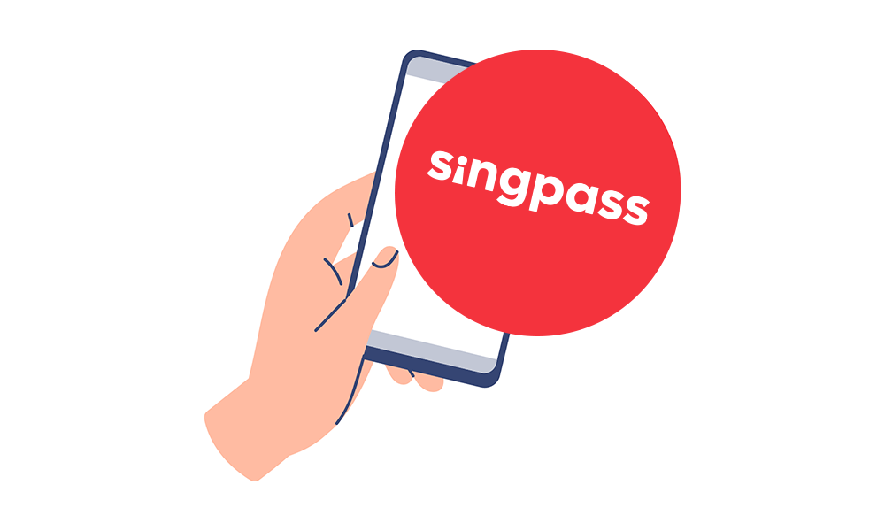
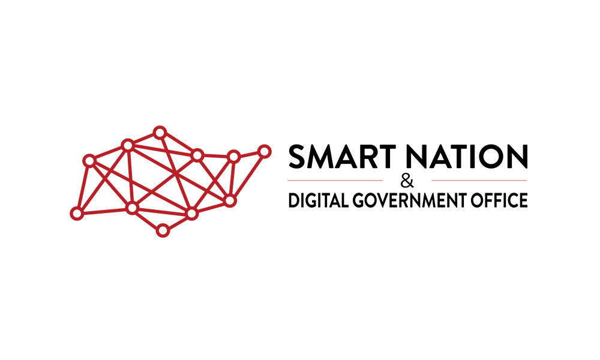
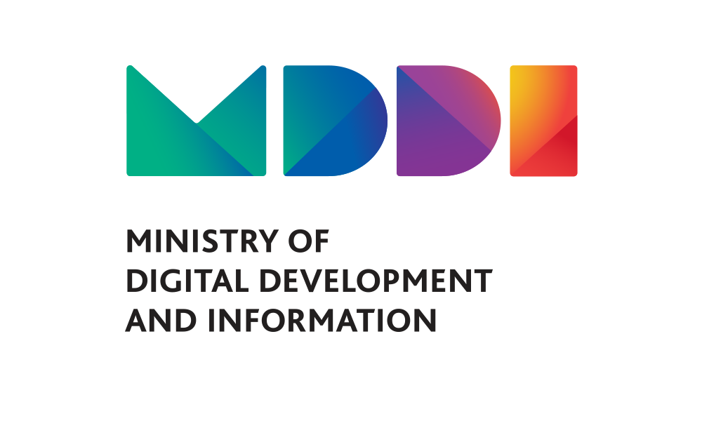

Buổi 3
Nghiên cứu trường hợp: Chương trình Quốc gia Thông minh của Singapore, Các sản phẩm Chính phủ Mở và Hệ thống Công nghệ của Chính phủ Singapore
![]()
Hành trình Quốc gia Thông minh









Niềm tin

Phát triển

Cộng đồng


Chiến lược Trí tuệ Nhân tạo Quốc gia

Phương pháp


Hệ thống theo dõi dựa trên giấy tờ khiến các tổ chức gặp khó khăn trong việc theo dõi việc phân phối hoặc điều chỉnh kế hoạch theo thời gian thực.
Điều này dẫn đến thời gian chờ đợi kéo dài, hồ sơ không chính xác và khả năng tiếp cận thêm người hưởng lợi bị hạn chế.
DistributeSG cho phép các cơ quan chính phủ và tổ chức phi lợi nhuận triển khai và theo dõi các chiến dịch phân phối với khả năng theo dõi theo thời gian thực.
Nó bao gồm một cổng thông tin quản trị cho các nhà tổ chức thiết lập chiến dịch và một ứng dụng di động để theo dõi trực tiếp các mặt hàng đã phân phối.

Build for Good là một sáng kiến tham gia của công dân do Open Government Products khởi xướng, khuyến khích công dân góp phần cải thiện Singapore.
Công dân có thể tham gia thông qua một cuộc thi lập trình, một chương trình tăng tốc cho các đội chiến thắng hoặc bằng cách gia nhập cộng đồng.
Sáng kiến này nhằm tạo ra một không gian hỗ trợ nơi cá nhân cảm thấy được trao quyền để đóng góp tích cực, thử nghiệm và xây dựng các giải pháp làm cho thế giới tốt đẹp hơn.

Hack for Public Good (HFPG) thay thế phương pháp phát triển sản phẩm từ trên xuống bằng một cách tiếp cận do cộng đồng dẫn dắt.
Thay vì ban lãnh đạo xác định hướng đi, các đội ngũ công nghệ sẽ tương tác trực tiếp với cộng đồng để xác định các vấn đề vì lợi ích công cộng tại Singapore.
Các đội ngũ này sau đó thiết kế và xây dựng giải pháp dựa trên những gì họ phát hiện.
Kiến trúc

Kiến trúc - lớp nền tảng

Giải pháp
APEX tích hợp các giao diện lập trình ứng dụng (API) từ nhiều cơ quan chính phủ trên một nền tảng an toàn duy nhất.
Nó cho phép các nhà phát triển, bao gồm cả nhà cung cấp phần mềm nhân sự và tiền lương, tích hợp dễ dàng với các dịch vụ này.
APEX loại bỏ nhu cầu nộp hồ sơ thủ công, giảm bớt gánh nặng hành chính và hỗ trợ tuân thủ tốt hơn các quy định liên quan đến lương bổng.